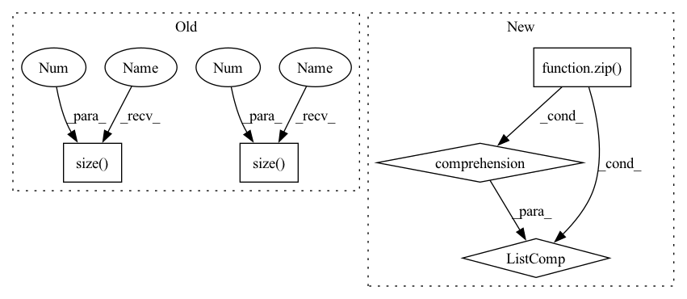

Pattern ID :24356

Before Change
conditions = F.interpolate(mel_embs, scale_factor=float(self.hop_len))
conditions = conditions.transpose(1, 2)
hid = torch.zeros(mels.size(0), 1, self.wav_rnn_dim, device=mels.device)
wav = torch.full(
(mels.size(0),), self.quant_dim // 2, dtype=torch.long, device=mels.device,
)
wavs = torch.empty(
mels.size(0),
After Change
wavs = torch.true_divide(torch.sign(wavs), mu) * (
(1 + mu) ** torch.abs(wavs) - 1
)
wavs = [
wav[:length] for wav, length in zip(torch.unbind(wavs, dim=0), wav_lens)
]
return wavs
In pattern: SUPERPATTERN
Frequency: 3
Non-data size: 5
Instances
Fragment ID: 75692546
Project Name: yistlin/universal-vocoder
Commit Name: a2f043170a0335459db6b45b7d8dc692db9a00f5
Time: 2020-10-06
Author: yishen992@gmail.com
File Name: models/universal_vocoder.py
M Class Name: UniversalVocoder
N Class Name: UniversalVocoder
M Method Name: generate(2)
N Method Name: generate(2)
M Parent Class: nn.Module
N Parent Class: nn.Module
M File Name: models/universal_vocoder.py
N File Name: models/universal_vocoder.py
M Start Line: 58
M End Line: 88
N Start Line: 63
N End Line: 120
'>
Before Change
hid = torch.zeros(mels.size(0), 1, self.wav_rnn_dim, device=mels.device)
wav = torch.full(
(mels.size(0),), self.quant_dim // 2, dtype=torch.long, device=mels.device,
)
wavs = torch.empty(
mels.size(0),
mels.size(1) * self.hop_len,
dtype=torch.long,
device=mels.device,
)
After Change
wavs = torch.true_divide(torch.sign(wavs), mu) * (
(1 + mu) ** torch.abs(wavs) - 1
)
wavs = [
wav[:length] for wav, length in zip(torch.unbind(wavs, dim=0), wav_lens)
]
return wavs
'>
Fragment ID: 75692544
Project Name: yistlin/universal-vocoder
Commit Name: a2f043170a0335459db6b45b7d8dc692db9a00f5
Time: 2020-10-06
Author: yishen992@gmail.com
File Name: models/universal_vocoder.py
M Class Name: UniversalVocoder
N Class Name: UniversalVocoder
M Method Name: generate(2)
N Method Name: generate(2)
M Parent Class: nn.Module
N Parent Class: nn.Module
M File Name: models/universal_vocoder.py
N File Name: models/universal_vocoder.py
M Start Line: 58
M End Line: 88
N Start Line: 63
N End Line: 120
'>
Before Change
output = deterministic_dropout(output, seed, dropout=self.dropout)
// [batch * chunk, length // chunk, d_ff]
output = self.linear2(output)
// [batch * chunk, length // chunk, d_model]
output = output.reshape(-1, output.size(1) * self.chunk, output.size(2))
// [batch, length, d_model]
return output
After Change
if self.training:
output = [
deterministic_dropout(chunk, seed + i, dropout=self.dropout)\
for chunk, i in zip(output, range(self.chunk))
]
// [batch, length // chunk, d_ff]
output = torch.cat([self.linear2(chunk) for chunk in output], dim=1)
// [batch, length, d_model]
return output
'>
Fragment ID: 75692545
Project Name: rick-mccoy/reformer-pytorch
Commit Name: 2329ebf0b795c0c005a71d3573236e9a6475bc98
Time: 2020-02-02
Author: rickmccoy3141@gmail.com
File Name: model/feedforward.py
M Class Name: ChunkFeedForward
N Class Name: ChunkFeedForward
M Method Name: forward(3)
N Method Name: forward(3)
M Parent Class: nn.Module
N Parent Class: nn.Module
M File Name: model/feedforward.py
N File Name: model/feedforward.py
M Start Line: 16
M End Line: 26
N Start Line: 17
N End Line: 28
'>
Before Change
ignore_index=ignore_label)
def forward(self, score, target):
ph, pw = score.size(2), score.size(3)
h, w = target.size(1), target.size(2)
if ph != h or pw != w:
score = F.upsample(
input=score, size=(h, w), mode="bilinear")
After Change
weights = config.LOSS.BALANCE_WEIGHTS
assert len(weights) == len(score)
return sum([w * self._forward(x, target) for (w, x) in zip(weights, score)])
class OhemCrossEntropy(nn.Module):
'>
Fragment ID: 75692523
Project Name: chenjun2hao/ddrnet.pytorch
Commit Name: 3ce340bc520946fb220e83075f6e015bbe87cfe5
Time: 2019-12-12
Author: hsfzxjy@gmail.com
File Name: lib/core/criterion.py
M Class Name: CrossEntropy
N Class Name: CrossEntropy
M Method Name: forward(3)
N Method Name: forward(3)
M Parent Class: nn.Module
N Parent Class: nn.Module
M File Name: lib/core/criterion.py
N File Name: lib/core/criterion.py
M Start Line: 20
M End Line: 28
N Start Line: 36
N End Line: 42